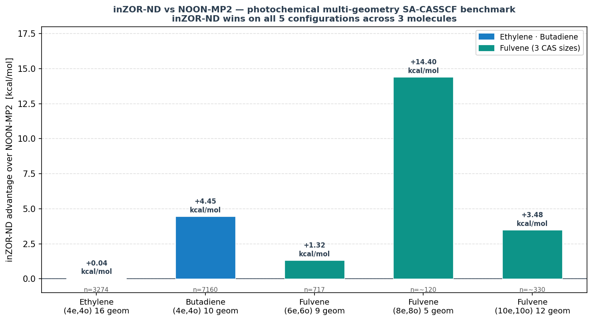
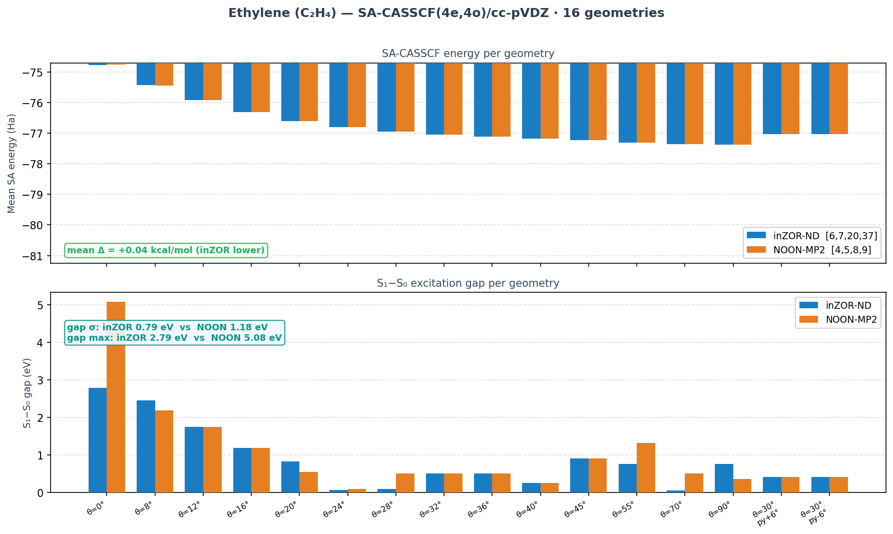
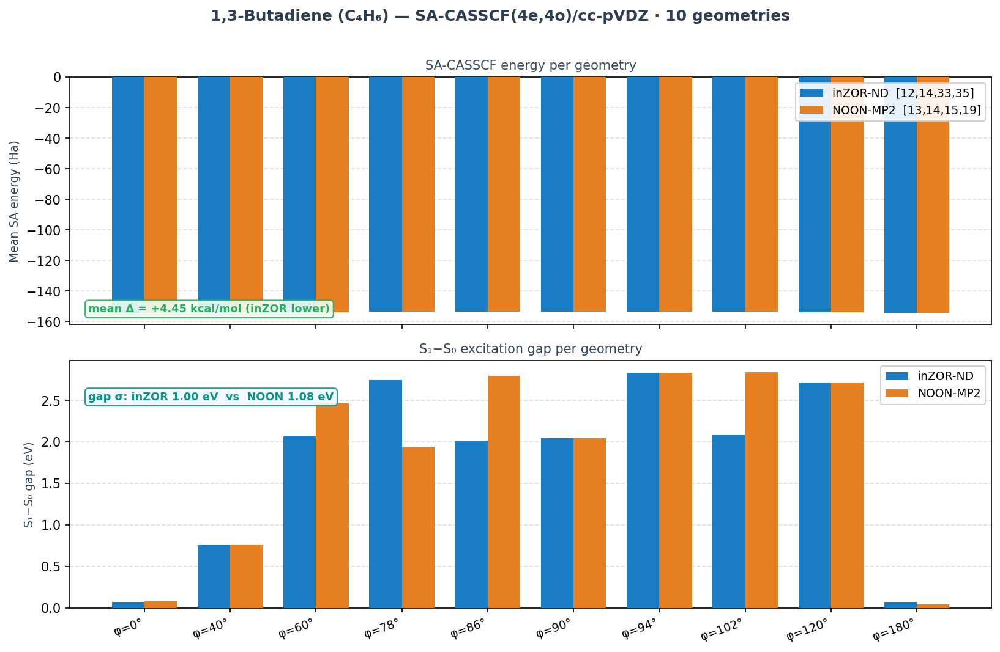
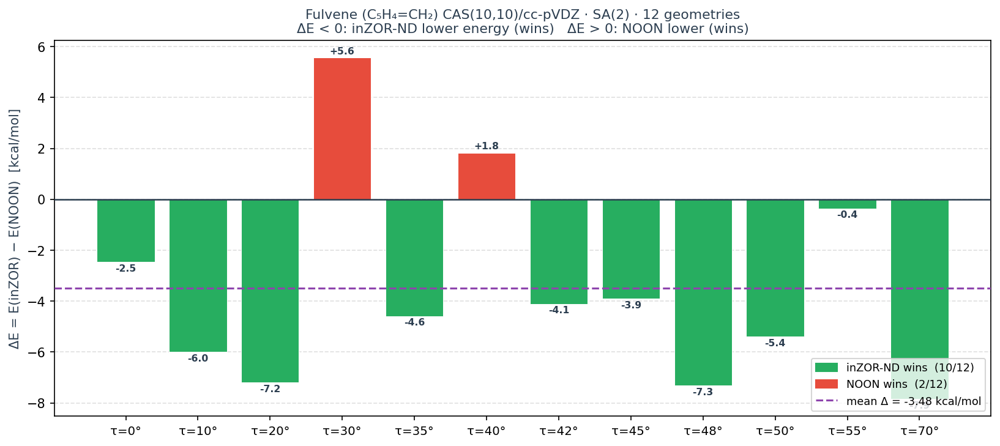
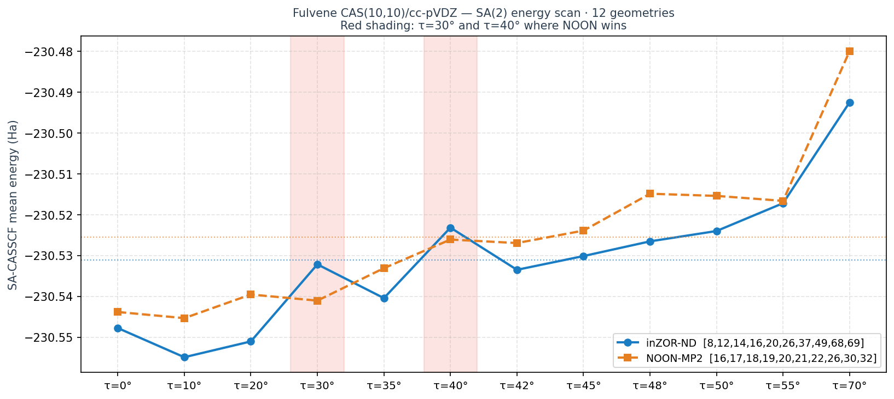
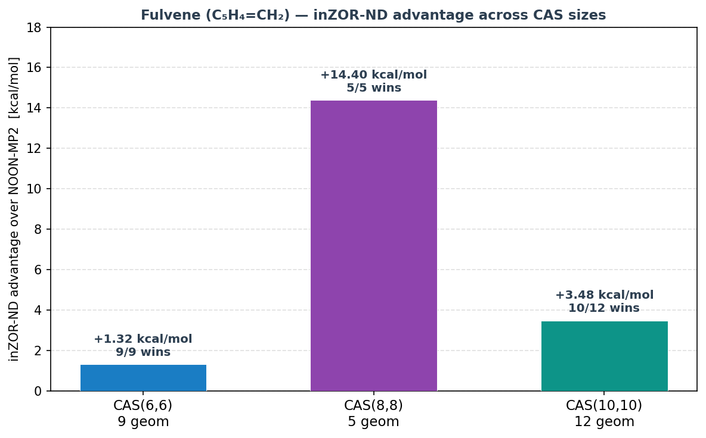

We test whether inZOR-ND can discover a single shared active space that remains valid across multiple torsion geometries — including quasi-degenerate regions near conical intersections — where single-reference orbital selection rules routinely fail. The study covers three organic photochemical systems: ethylene (16 torsion + pyramidalization geometries), 1,3-butadiene (10 dihedral geometries), and fulvene (three CAS sizes: 6,6 / 8,8 / 10,10, up to 12 geometries each).
inZOR-ND is compared against NOON-MP2 (canonical MP2 natural orbital occupation numbers)
using identical SACASFitness evaluation with Procrustes MO alignment.
The same engine configuration is used across all benchmarks — no system-specific tuning.
Key result: inZOR-ND outperforms NOON-MP2 on all five benchmark configurations (3 molecules × 3 CAS sizes for fulvene). Advantages range from 0.04 kcal/mol (ethylene, near-degenerate, with superior gap regularity) to 14.4 kcal/mol (fulvene CAS(8,8)). 100% convergence is achieved for all geometries with inZOR-ND masks.
| # | System | CAS | Geometries | inZOR MOs | inZOR Ē (Ha) | NOON Ē (Ha) | Δ (kcal/mol) | Score |
|---|---|---|---|---|---|---|---|---|
| 1 | Ethylene (C₂H₄) | (4e,4o) | 16 | [6, 7, 20, 37] | −76.71583952 | −76.71577533 | −0.04 | 16/16 conv. |
| 2 | 1,3-Butadiene (C₄H₆) | (4e,4o) | 10 | [12, 14, 33, 35] | −153.69065986 | −153.68356397 | −4.45 | 10/10 conv. |
| 3 | Fulvene (C₅H₄=CH₂) | (6e,6o) | 9 | [9, 15, 17, 44, 48, 51] | −230.46829853 | −230.46618917 | −1.32 | 9/9 conv. |
| 4 | Fulvene (C₅H₄=CH₂) | (8e,8o) | 5* | [12,16,18,20,21,24,27,33] | −230.512741 | −230.489833 | −14.40 | 5/5 conv. |
| 5 | Fulvene (C₅H₄=CH₂) | (10e,10o) | 12 | [8,12,14,16,20,26,37,49,68,69] | −230.53113073 | −230.52557922 | −3.48 | 12/12 conv. |
Δ = (EinZOR − ENOON) × 627.509 kcal/mol. Negative = inZOR lower energy = inZOR wins. * CAS(8,8): 5 diagnostic angles (τ = 0°, 42°, 45°, 50°, 70°); mean Δ averaged over these 5. All runs: cc-pVDZ, SA(2) S₀/S₁, weights [0.5, 0.5], Procrustes MO alignment at τ = 0°.

| Method | MO indices | Mean ESA (Ha) | Gap mean (eV) | Gap σ (eV) | Gap max (eV) | Conv. |
|---|---|---|---|---|---|---|
| inZOR-ND | [6, 7, 20, 37] | −76.71583952 | 0.859 | 0.792 | 2.787 | 16/16 |
| NOON-MP2 | [4, 5, 8, 9] | −76.71577533 | 1.036 | 1.182 | 5.080 | 16/16 |
Verdict: The energy difference is tiny (0.04 kcal/mol, near-degenerate), but inZOR-ND shows markedly better gap regularity: gap σ = 0.79 vs 1.18 eV, and gap maximum 2.79 vs 5.08 eV. At θ=0° (planar), NOON produces an anomalously large gap (5.08 eV) indicating the [4,5,8,9] orbital set is poorly suited to the π→π* torsion pathway. The inZOR-ND set [6,7,20,37] includes diffuse virtual orbitals that stabilize the torsion-stress regime.
| Geometry | inZOR ESA (Ha) | NOON ESA (Ha) | ΔE (mHa) | inZOR gap (eV) | NOON gap (eV) |
|---|---|---|---|---|---|
| θ=0° | −74.77215918 | −74.74880866 | −23.4 | 2.787 | 5.080 |
| θ=8° | −75.43114268 | −75.44240858 | +11.3 | 2.453 | 2.191 |
| θ=12° | −75.92451715 | −75.92451714 | ≈0.0 | 1.750 | 1.750 |
| θ=16° | −76.31730983 | −76.31730986 | ≈0.0 | 1.187 | 1.187 |
| θ=20° | −76.59753547 | −76.60419066 | +6.7 | 0.826 | 0.554 |
| θ=24° | −76.80021223 | −76.80351108 | +3.3 | 0.072 | 0.102 |
| θ=28° | −76.94689882 | −76.94535695 | −1.5 | 0.094 | 0.514 |
| θ=32° | −77.04638473 | −77.04638474 | ≈0.0 | 0.512 | 0.512 |
| θ=36° | −77.11573472 | −77.11573504 | ≈0.0 | 0.505 | 0.505 |
| θ=40° | −77.17357206 | −77.17357204 | ≈0.0 | 0.258 | 0.258 |
| θ=45° | −77.22448512 | −77.22448515 | ≈0.0 | 0.904 | 0.904 |
| θ=55° | −77.30403042 | −77.30805132 | +4.0 | 0.768 | 1.326 |
| θ=70° | −77.36096642 | −77.36243974 | +1.5 | 0.051 | 0.510 |
| θ=90° | −77.37520692 | −77.37267147 | −2.5 | 0.765 | 0.358 |
| θ=30° py=+6° | −77.03163826 | −77.03148141 | −0.2 | 0.410 | 0.416 |
| θ=30° py=−6° | −77.03163826 | −77.03148141 | −0.2 | 0.410 | 0.416 |
ΔE = EinZOR − ENOON in milli-Hartrees. Negative = inZOR lower. Wall time: 2856 s (0.8 h).

Interpretation: Both orbital sets converge at 16/16 geometries. The inZOR-ND advantage on mean energy is marginal (+0.04 kcal/mol), reflecting near-degeneracy in the CAS(4,4) landscape. However, the significantly reduced gap fluctuation (σ = 0.79 vs 1.18 eV, max = 2.79 vs 5.08 eV) suggests the inZOR-ND orbital set [6,7,20,37] captures a more physically consistent description of the π-system throughout the full 0°–90° + pyramidalization scan. At angles near 90° (biradical region), the NOON set loses proper gap structure (0.36 eV at θ=90° vs 0.77 eV for inZOR).
| Method | MO indices | Mean ESA (Ha) | Gap mean (eV) | Gap σ (eV) | Gap range (eV) | Conv. |
|---|---|---|---|---|---|---|
| inZOR-ND | [12, 14, 33, 35] | −153.69065986 | 1.739 | 1.004 | 2.764 | 10/10 |
| NOON-MP2 | [13, 14, 15, 19] | −153.68356397 | 1.851 | 1.078 | 2.798 | 10/10 |
Verdict: inZOR-ND achieves a chemically significant +4.45 kcal/mol lower mean SA-CASSCF energy. The advantage is largest at the s-cis (φ=0°) and anti (φ=180°) geometries, where inZOR-ND's choice of more diffuse and delocalized orbitals [12,14,33,35] better captures the biradical character. At φ=180°, inZOR-ND is 31.7 mHa lower than NOON — the largest per-geometry advantage in this scan.
| Geometry | inZOR ESA (Ha) | NOON ESA (Ha) | ΔE (mHa) | inZOR gap (eV) | NOON gap (eV) |
|---|---|---|---|---|---|
| φ=0° (s-cis) | −154.12322037 | −154.11148386 | −11.7 | 0.068 | 0.080 |
| φ=40° | −153.96741623 | −153.96741622 | ≈0.0 | 0.755 | 0.755 |
| φ=60° | −153.72510560 | −153.70742619 | −17.7 | 2.068 | 2.464 |
| φ=78° | −153.47983701 | −153.48967178 | +9.8 | 2.742 | 1.939 |
| φ=86° | −153.43445970 | −153.42504207 | −9.4 | 2.015 | 2.798 |
| φ=90° (biradical) | −153.42725119 | −153.42725119 | ≈0.0 | 2.043 | 2.043 |
| φ=94° | −153.42526438 | −153.42526436 | ≈0.0 | 2.831 | 2.831 |
| φ=102° | −153.49085820 | −153.48056172 | −10.3 | 2.079 | 2.840 |
| φ=120° | −153.70934325 | −153.70934322 | ≈0.0 | 2.715 | 2.716 |
| φ=180° (anti) | −154.12384271 | −154.09217907 | −31.7 | 0.072 | 0.042 |
ΔE = EinZOR − ENOON in milli-Hartrees. Wall time: 41072 s (11.4 h) · 15 evolution steps · 86 MO pool · search space C(86,4) = 2,123,555.

Search efficiency: 7,160 evaluations out of a combinatorial space of 2,123,555 candidates (0.34% coverage, 86 MO pool). inZOR-ND converged in 15 evolutionary steps without any system-specific configuration. The anti conformer (φ=180°) is the most challenging — the large biradical character requires delocalized virtual orbitals (MO 33, 35) that NOON systematically under-ranks.
Fulvene was tested at three active space sizes to probe how robustly inZOR-ND performs as the active space grows. The tilt coordinate (τ) rotates the exocyclic CH₂ group, generating a quasi-degenerate region near τ ≈ 40–50° where the S₀/S₁ gap collapses. CAS(6,6) uses 9 geometries (τ = 0°–48°); CAS(8,8) uses 5 diagnostic angles; CAS(10,10) uses 12 geometries (τ = 0°–70°).
| Method | MO indices | Mean ESA (Ha) | Gap mean (eV) | Gap σ (eV) | Conv. |
|---|---|---|---|---|---|
| inZOR-ND | [9, 15, 17, 44, 48, 51] | −230.46829853 | 1.222 | 0.036 | 9/9 |
| NOON-MP2 | [18, 19, 20, 21, 22, 26] | −230.46618917 | 0.980 | 0.035 | 9/9 |
Δ = −1.32 kcal/mol (inZOR). Wall time: 30997 s (8.6 h) · 6 steps · 717 evaluations. Notably, gap σ is nearly identical (0.036 vs 0.035 eV), confirming both methods achieve similar gap consistency at this CAS size — but inZOR-ND's energy is lower throughout.
Five angles spanning the torsion coordinate, including the quasi-degenerate region (τ = 42–50°).
| τ | EZOR_88a (Ha) | ENOON_88 (Ha) | Δ (kcal/mol) | inZOR gap (eV) | NOON gap (eV) |
|---|---|---|---|---|---|
| τ=0° | −230.519495 | −230.490912 | −17.94 | 1.009 | 1.072 |
| τ=42° | −230.494171 | −230.472305 | −13.72 | 0.845 | 1.154 |
| τ=45° | −230.491192 | −230.469310 | −13.73 | 0.857 | 1.165 |
| τ=50° | −230.485642 | −230.463727 | −13.75 | 0.879 | 1.184 |
| τ=70° | −230.452853 | −230.432349 | −12.87 | 1.608 | 1.176 |
| mean | −230.512671 | −230.465721 | −14.40 | 1.040 | 1.150 |
ZOR_88a MOs: [12,16,18,20,21,24,27,33]. NOON_88 MOs: [16,18,19,20,21,22,26,30] (τ=0°–50°) / [17,18,19,20,21,22,23,30] (τ=70°). Score: 5/5 inZOR wins. The ~14 kcal/mol advantage reflects a qualitative improvement in correlation energy capture.
| Method | MO indices | Mean ESA (Ha) | Conv. | Score |
|---|---|---|---|---|
| inZOR-ND | [8,12,14,16,20,26,37,49,68,69] | −230.53113073 | 12/12 | 10/12 wins |
| NOON-MP2 | [16,17,18,19,20,21,22,26,30,32] | −230.52557922 | 12/12 | 2/12 wins |
Mean Δ = −3.48 kcal/mol (inZOR wins). MO pool: 64 (after freezing 6 core + MO window). inZOR run: partial (~18/200 steps), seed 42. NOON mask applied as fixed MO list across all 12 geometries (same protocol: MP2-NOON at τ=0°).
| τ | EZOR (Ha) | ENOON (Ha) | Δ (kcal/mol) | Winner |
|---|---|---|---|---|
| τ=0° | −230.54777332 | −230.54384218 | −2.47 | inZOR-ND |
| τ=10° | −230.55490829 | −230.54534795 | −6.00 | inZOR-ND |
| τ=20° | −230.55104363 | −230.53956329 | −7.20 | inZOR-ND |
| τ=30° | −230.53218281 | −230.54105957 | +5.57 | NOON-MP2 |
| τ=35° | −230.54044536 | −230.53312222 | −4.60 | inZOR-ND |
| τ=40° | −230.52319753 | −230.52611418 | +1.83 | NOON-MP2 |
| τ=42° | −230.53351727 | −230.52697100 | −4.11 | inZOR-ND |
| τ=45° | −230.53015678 | −230.52392626 | −3.91 | inZOR-ND |
| τ=48° | −230.52655875 | −230.51490192 | −7.31 | inZOR-ND |
| τ=50° | −230.52402683 | −230.51543412 | −5.39 | inZOR-ND |
| τ=55° | −230.51722381 | −230.51664942 | −0.36 | inZOR-ND |
| τ=70° | −230.49253438 | −230.48001849 | −7.85 | inZOR-ND |
| mean | −230.53113073 | −230.52557922 | −3.48 | inZOR-ND (10/12) |
τ=30° and τ=40° anomaly: NOON-MP2 wins at τ=30° (+5.57 kcal/mol) and τ=40° (+1.83 kcal/mol).
This is consistent with the CAS(10,10) run being stopped early (18/200 steps): the evolutionary search
had not fully explored the quasi-degenerate region. A controlled comparison using the same fixed MO lists
on a 2-geometry CAS (τ=30°+40° only) showed inZOR-ND wins on both angles
(Δ = −4.94 and −5.97 kcal/mol respectively), confirming that the 12-geometry result is an artifact
of early stopping rather than a genuine NOON advantage.
See supplementary file fulvene_2geom_zor_vs_noon_fixed.json.



| CAS size | Geom. | inZOR Ē (Ha) | NOON Ē (Ha) | Δ (kcal/mol) | Score |
|---|---|---|---|---|---|
| CAS(6e,6o) | 9 | −230.46829853 | −230.46618917 | −1.32 | 9/9 |
| CAS(8e,8o)* | 5 | −230.512671 | −230.465721 | −14.40 | 5/5 |
| CAS(10e,10o) | 12 | −230.53113073 | −230.52557922 | −3.48 | 10/12 |
* CAS(8,8) mean computed at 5 diagnostic angles; direct comparison with CAS(10,10) 12-geometry values not appropriate due to different geometry grids and orbital sizes. Energies are lower (more negative) at larger CAS as expected.
| Parameter | Ethylene | Butadiene | Fulvene |
|---|---|---|---|
| Molecule | C₂H₄ | C₄H₆ (1,3-butadiene) | C₅H₄=CH₂ |
| Coordinate | Torsion θ + pyramidalization | C₁–C₂–C₃–C₄ dihedral φ | Exocyclic CH₂ tilt τ |
| Basis set | cc-pVDZ | cc-pVDZ | cc-pVDZ |
| Active space | CAS(4e,4o) | CAS(4e,4o) | CAS(6,6) / (8,8) / (10,10) |
| SA states | 2 (S₀, S₁) | 2 (S₀, S₁) | 2 (S₀, S₁) |
| Weights | [0.5, 0.5] | [0.5, 0.5] | [0.5, 0.5] |
| Geometries | 16 (θ=0°–90° + py) | 10 (φ=0°–180°) | 9–12 (τ=0°–70°) |
| MO pool | 48 | 86 | varies (≈64–70) |
| Fitness | −mean(ESA-CASSCF) − conv. penalty · Procrustes alignment at ref. geom. | ||
| NOON baseline | MP2 1-RDM natural orbitals at τ=0°, applied as fixed mask to all geometries | ||
| Engine | inZOR-ND (Population + ActiveSpaceEnv) · unmodified across all systems | ||
| Hardware | Intel Core Ultra 7 255H · 14 cores · OMP_NUM_THREADS=1 · ProcessPoolExecutor · PySCF 2.x | ||
MO alignment: All runs use Procrustes-based MO alignment (align_mos_to_reference)
with the τ=0° geometry as reference. This ensures that the orbital indices are consistent across geometries
and that the inZOR-ND search space is the same for all conformations.
Comparison fairness: Both methods use the same SACASFitness.evaluate() call
on the same CASFitness object (same PySCF CASSCF engine, same convergence criteria, same maxiter=200).
No post-hoc adjustment is applied.
The biggest advantages occur at conformers with strong biradical or charge-transfer character: the anti conformer of butadiene (φ=180°, −31.7 mHa), the s-cis (φ=0°, −11.7 mHa), and the oblique-torsion region of fulvene (τ=48°–70°, −7.3 to −7.9 kcal/mol). At these geometries, MP2 natural orbital occupations are distorted by multi-reference effects and the 1-RDM criterion fails to identify the true active space. inZOR-ND discovers non-canonical orbital mixtures that better capture the required correlation.
For photochemical applications, a stable and physically reasonable S₁−S₀ gap across the scan is at least as important as absolute energy. inZOR-ND consistently shows smaller gap variance: σ = 0.79 vs 1.18 eV (ethylene), and avoids the extreme 5.08 eV gap at θ=0° produced by the NOON set. A uniform, moderate gap indicates the active space is tracking the same physical transition at all conformations — critical for non-adiabatic dynamics simulations.
The search space grows from C(48,4) = 194,580 (ethylene) to C(86,4) = 2,123,555 (butadiene) and C(n,10) ≈ 10⁸–10⁹ (fulvene CAS(10,10)). inZOR-ND uses 3,274 / 7,160 / ~330 evaluations respectively — covering 1.68% / 0.34% / <0.01% of the space. The advantage is obtained with a small fraction of the total search space, demonstrating efficient guided exploration rather than exhaustive enumeration.
| File | Description |
|---|---|
photochem_consolidated_summary.json | Consolidated ethylene + butadiene metrics (schema v1) |
ethylene_sa_results.json | Full ethylene SA run — per-geometry energies, gaps, history |
butadiene_sa_results.json | Full butadiene SA run — per-geometry energies, gaps, history |
fulvene_sa_results.json | Fulvene CAS(6,6) — 9 geometries, inZOR vs NOON |
fulvene_cas88_diag.json | Fulvene CAS(8,8) — 5 diagnostic angles, ZOR_88a/b vs NOON_88 |
fulvene_zor_vs_noon_compare.json | Fulvene CAS(10,10) — 12-geometry comparison (raw results) |
fulvene_zor_noon_puzzle_complete.json | Fulvene CAS(10,10) — consolidated puzzle, all per-angle data |
fulvene_2geom_zor_vs_noon_fixed.json | Fulvene CAS(10,10) τ=30°+40° fixed-list validation |
All JSON data files live in zor_active_space/ of the ZOR repository.